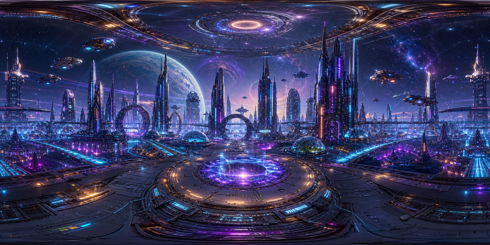
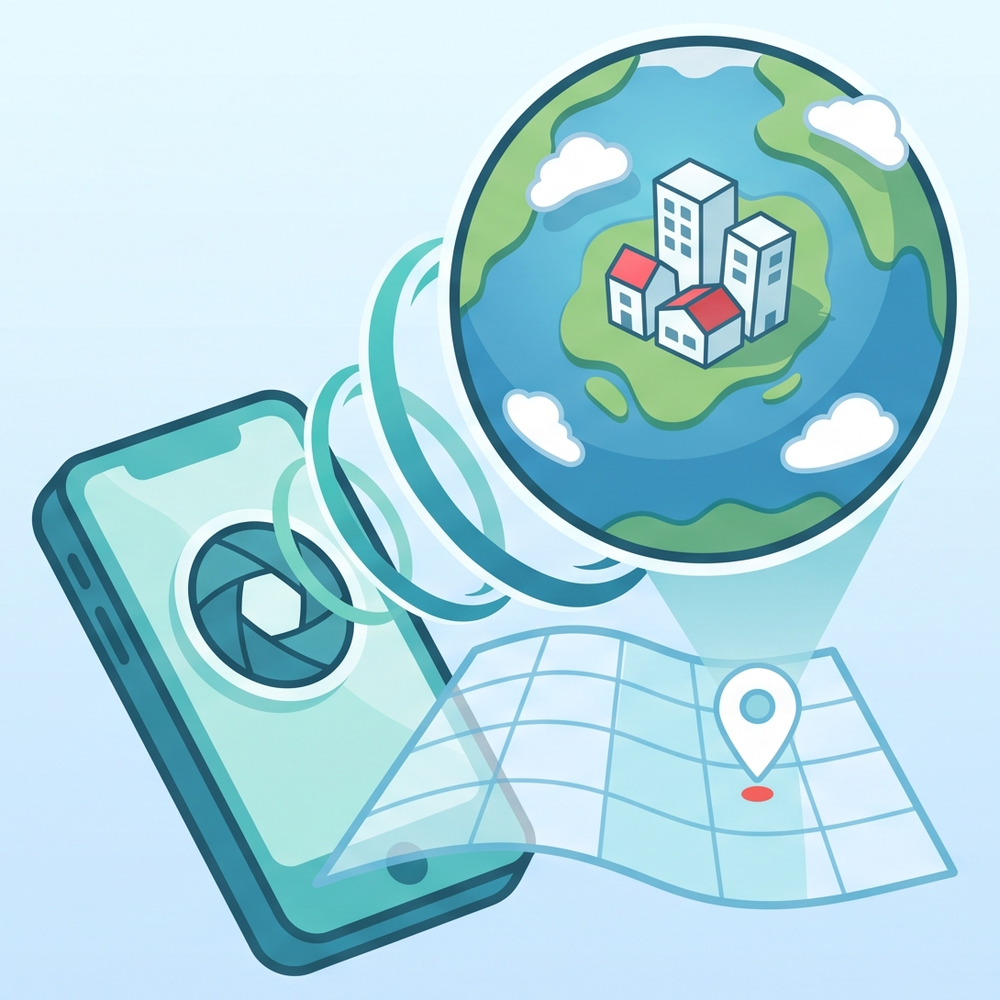

Local Library
Keep masters, variants, thumbnails, imports, exports, metadata, delete, share, and viewer workflows available without broad photo-library permission.
Repository
Android 360 image app · PhotoSphere and Tiny Planet · ARCore SharedCamera · OpenCV direction · version 0.4.2
Spherify is an Android app prototype for creating 360-degree PhotoSphere and Tiny Planet images from a phone camera, motion sensors, optional location metadata, and local storage. The product promise is intentionally local-first: capture, view, reshape, save, export, share, and manage images without making cloud publishing the reason the app exists.
The repository has gone through a useful reset. The older sweep-and-force-capture path was removed from production because it could create interesting visuals but could not honestly prove the geometry needed for a reliable spherical panorama. The current direction is stricter: ARCore SharedCamera plus Camera2 metadata for capture evidence, graph-backed overlap validation, and OpenCV-style global stitching before anything is labelled map-ready.


Capture Evidence
Product-derived visuals: bundled Tiny Planet image and app icon from the Spherify repository.
The original product thought was simple: a phone should be enough to stand in one place, turn slowly, make a convincing spherical image, and keep the result locally. Early versions proved the library, import, export, sharing, GPU-backed PhotoSphere viewer, Tiny Planet projection, thumbnails, metadata, and basic image management could work as a normal Android app.
Testing then exposed the deeper need. A good PhotoSphere is not just a pretty wrap around flat images; it needs capture evidence: camera pose, intrinsics, overlap, parallax control, exposure state, graph connectivity, and honest metadata. Spherify now treats capture as part of the measurement instrument, not just a way to collect pixels.
Keep masters, variants, thumbnails, imports, exports, metadata, delete, share, and viewer workflows available without broad photo-library permission.
Use ARCore visual-inertial tracking, Camera2 metadata, reticle targets, horizon guidance, feature confidence, and graph validation.
Only create 2:1 equirectangular PhotoSphere masters with GPano metadata when coverage, seams, poles, residuals, and readback support the claim.
Current version is 0.4.2, with application ID com.spherify.app, compile and target SDK 36, and minimum SDK 26. The local library, flat-image import, GPU-backed viewers, adjustment controls, saved variants, thumbnails, metadata display, export, share, delete, debug diagnostics, and basic library management remain operational.
Production Spherify master export is still blocked until the full Android OpenCV dependency path exposes the stitching/detail symbols needed for the intended solver. Direct Google Maps publishing is not implemented, and the repository explicitly warns against claiming it until the exact workflow is built, tested, and visible to users.